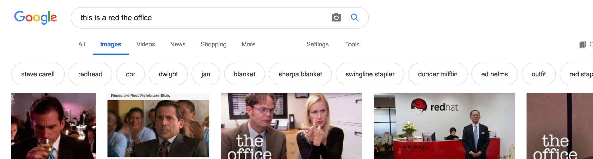

Where Does DuckDuckGo Fall Short?
April 8th, 2019
When it comes to memes, it turns out.
Take the following search that I made today: “this is a red the office.” On their respective main results pages, both DuckDuckGo and Google return this video as the #1 suggested result.
However, only Google returns the actual static-image meme. (Ok, it was actually a gif.)

DuckDuckGo is pretty good at handling objective searches — those without esoteric context. If we’re following the Pareto principle, let’s call these searches 80% of total searches. But DDG has not yet cracked the remaining 20%: the desperate searches made with nothing more than fragments of something long-forgotten. Or, alternatively, searches for things that live in the corners of the internet — such as memes from The Office. Unfortunately for DDG, this 20% is probably the most important part of a user’s search experience. Personally, I’ve experienced numerous situations in which Google came through with absolutely no help from me, the user. [1]
This leads to another thought: which search engine functions best for non-native speakers?
I’ve been fortunate to meet a large number of people from all over the world — through work, school, and my personal life. People from Europe, South America, the Middle East, Asia, Africa, and Oceania. In meeting all of these people, I’ve noticed how differently I experience American English as a native speaker vs. how they experience it as non-native speakers.
Most spoken conversations in America involve, in one way or another, analogies, figures of speech, metaphors, and idioms. [2] All of these things can be highly confusing to non-native speakers that lack the localized understanding of regional cultures and dialects. [3] Fortunately for these non-native speakers, Google is particularly adept at identifying these sorts of references — which makes it a great option for users seeking to understand context with which they are unfamiliar.
But don’t count DuckDuckGo out just yet. Non-native speakers use English quite literally, after all. So, might these individuals draw results from DuckDuckGo that are similar to or better than those they would draw from Google? Perhaps it is actually a benefit to DuckDuckGo that its objective results have not been obscured by localized context? (I’m playing devil’s advocate — I think it would be great to have both.)
I am curious to see if and how DuckDuckGo will develop this contextual understanding over time. It would certainly be much easier for them to do so if they cache and cookie their users up and down the internet, as Google does.
Which makes it all the more admirable that they have opted not to do so.
---
[1] This might make a fun mad libs exercise. [Noun] [adjective] [place] [approximate temperature outside when you were thinking about this thing]
[2] A dime a dozen / Bite the bullet / Break a leg / Cut them some slack / Get out of hand / Miss the boat / On the ball / Under the weather. All great examples of idioms. All highly confusing to non-native speakers. (Sports references of all kinds, too.)
[3] While all of these things can be confusing to non-native speakers, I’ve actually found similes to be helpful when conveying comparisons. They’re less subtle, which I think makes them more accessible.